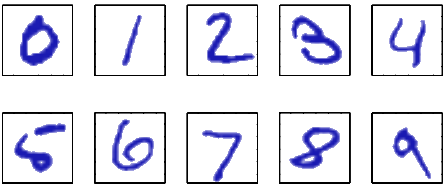
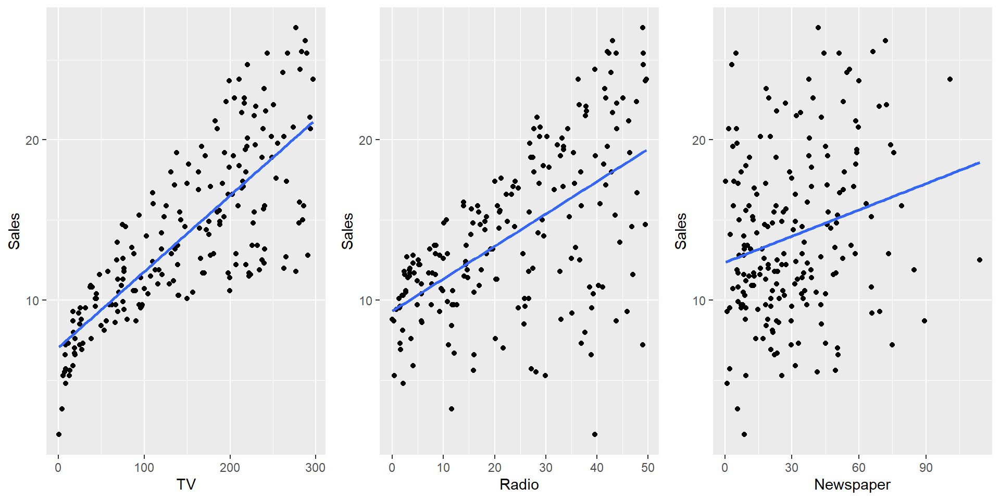
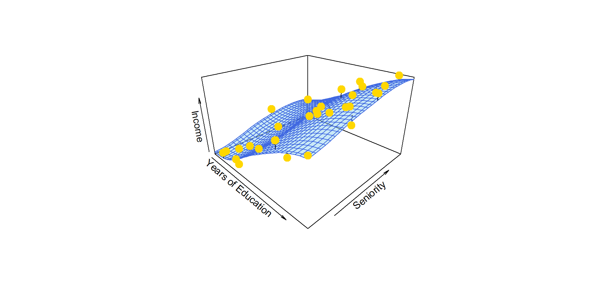
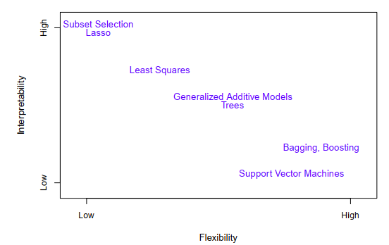

X TV Radio Newspaper Sales
1 1 230.1 37.8 69.2 22.1
2 2 44.5 39.3 45.1 10.4
3 3 17.2 45.9 69.3 9.3
4 4 151.5 41.3 58.5 18.5
5 5 180.8 10.8 58.4 12.9
6 6 8.7 48.9 75.0 7.2Introducción a machine learning
IND 163 - 2022/02
Eloy Alvarado Narváez
Universidad Técnica Federico Santa María
07/10/22
Introducción
- El problema de buscar patrones
- El reconocimiento de patrones se ocupa del descubrimiento automático de regularidades en los datos mediante el uso de algoritmos, y usa estas regularidades para tomar acciones.
Ejemplo
Tomemos como ejemplo el reconocer dígitos escritos a mano.
Ejemplo: continuación
Estos dígitos corresponden a imágenes de 28x28 pixeles, por lo que pueden ser representados en un vector \(\mathbf{x}\) que contiene 784 números reales.
El objetivo es construir una máquina que tome el vector \(\mathbf{x}\) como entrada y produzca la identidad del dígito \(0,\dots,9\) como salida.
Este problema es claramente no-trivial debido a la gran variedad de escrituras. Podría abordarse utilizando reglas heurísticas para distinguir los dígitos en función de las formas de los trazos, pero en la práctica, tal enfoque conduce a una proliferación de reglas y de excepciones a las reglas, etc., e invariablemente da malos resultados.
Introducción: continuación
Mejores resultados pueden ser obtenidos adoptando un enfoque de machine learning, en donde un conjunto grande de datos de \(N\) dígitos \(\{x_1 ,\ldots, x_n\}\) llamados conjunto de entrenamiento (training set) se utiliza para ajustar los parámetros de un modelo adaptativo.
Las categorías de los dígitos en el conjunto de entrenamiento se conocen de antemano, normalmente inspeccionándolos individualmente y etiquetándolos a mano.
Podemos expresar la categoría de un dígito usando un vector objetivo (target vector) \(\mathbf{t}\), que representa la identidad del dígito correspondiente. Notar que hay un vector objetivo \(\mathbf{t}\) para cada dígito de la imagen \(\mathbf{x}\).
Introducción: continuación
El resultado tras aplicar el algoritmo de machine learning puede ser expresado como una función \(\mathbf{y}(\mathbf{x})\), que toma una nueva imagen del dígito \(\mathbf{x}\) como entrada y que genera como salida un vector \(\mathbf{y}\), codificada de la misma manera que los vector objetivos.
La forma exacta de la función \(\mathbf{y}(\mathbf{x})\) es determinada durante la fase de entrenamiento, también conocida como la fase de aprendizaje, en base al conjunto de entrenamiento.
Una vez que el modelo es entrenado, este puede ser usado para identificar nuevas imágenes de dígitos, que les llamamos conjunto de prueba (test set).
La habilidad de categorizar correctamente nuevos ejemplos que difieren de los utilizados en la fase de aprendizaje es conocido como generalización.
Introducción: continuación
En la mayoría de las aplicaciones reales, las variables de entrada son típicamente preprocesadas para transformarlas a un nuevo espacio de variables donde, se espera que la problemática de reconocer patrones sea más fácil de resolver.
Por ejemplo, en el reconocimiento de dígitos escritos a mano, las imágenes de los dígitos generalmente se transforman y escalan tal que cada dígito esté contenido dentro de un cuadro de tamaño fijo. Esto reduce en gran medida la variabilidad dentro de cada clase de dígito, debido a que la localización y la escala de todos los dígitos serán las mismas, por lo que la identificación de patrones se facilitará.
La etapa de de pre-procesamiento es usualmente conocida como extracción de características (feature extraction).
Notar que los nuevos datos, incluidos en el conjunto de entrenamiento, deben ser preprocesados de igual manera que los del conjunto de entrenamiento.
Introducción: continuación
La etapa de preprocesamiento también puede ser utilizada para acelerar el cálculo del algoritmo utilizado. Se debe tener especial cuidado en esta etapa debido a que usualmente, cierta información es descartada, y si esta es importante para la solución del problema, la precisión general del sistema confeccionado puede verse afectada.
Las aplicaciones en donde la entrada son los datos de entrenamiento (training set) en conjunto con sus correspondientes vectores objetivo son conocidas como problemas de aprendizaje supervisado (supervised learning problems).
Los casos en donde el objetivo es asignar a cada vector de entrada una categoría, se conocen como problemas de clasificación.
Si se desean salidas que consisten en una o más variables continuas, entonces le llamamos regresión.
Introducción: continuación
Las aplicaciones en donde la entrada son los datos de entrenamiento (training set) sin sus correspondientes vectores objetivos son conocidas como problemas de aprendizaje no supervisado (unsupervised learning problems). Varios pueden ser los objetivos en este tipo de problemas:
- Descubrir grupos de elementos similares dentro de los datos, en este caso le llamamos agrupamiento (clustering)
- Estimar la distribución de los datos dentro del espacio de los datos, a esto le llamamos estimación de densidad
- Proyectar los datos desde un espacio multidimensional a uno de 2 o 3 dimensiones, para así poder visualizarlo, a esto le llamamos visualización.
Introducción: continuación
Otra técnica utilizada en machine learning es el aprendizaje reforzado (reinforcement learning), que se ocupa del problema de encontrar acciones adecuadas para tomar en una situación específica con el fin de maximizar una recompensa.
En este caso, el algoritmo de aprendizaje no recibe ejemplos de resultados óptimos (como se tienen en el aprendizaje supervisado), sino que debe descubrirlos mediante un proceso de prueba y error.
Ejemplo
Se desea mejorar las ventas de un producto en particular. El siguiente conjunto de datos contiene datos de las ventas de aquel producto en 200 mercados diferentes, junto con el presupuesto de publicidad para el producto en cada uno de los mercados para 3 medios de publicidad: TV, radio y diario.
Ejemplo: continuación
Ejemplo: continuación
Ejemplo: continuación
En este ejemplo, los presupuestos son las variables de entrada (input) mientras que las ventas es la variable de salida (output). Usualmente denotaremos a las variables de entrada por la letra \(X\), así \(X_1\) es el presupuesto en televisión, \(X_2\) en Radio y \(X_3\) en periódicos.
Estas variables de entregada también se le conocen como predictores, variables independientes, features o simplemente variables.
La variable respuesta Sales es usualmente llamada respuesta o variable dependiente, y se denota por la letra \(Y\).
Ejemplo: continuación
En general, supongamos que observamos una variable respuesta cuantitativa \(Y\) y \(p\) diferentes predictores \(X_1,\dots,X_p\). Asumiremos que existe algún tipo de relación entre \(Y\) y \(X=(X_1,X_2,\dots,X_p)\) que puede ser escrito de forma general como
\[Y=f(X)+\varepsilon\]
Donde \(f\) es una función fija de \(X_1,\dots,X_p\) y \(\varepsilon\) es un error aleatorio, que es independiente de \(X\) y tiene media cero. En lo anterior, \(f\) representa la información sistemática que \(X\) provee sobre \(Y\).
Aprendizaje estadístico
El aprendizaje estadístico refiere al conjunto de herramientas y enfoques para estimar \(f\).
¿Para qué estimar \(f\)?
Predicción
En muchas situaciones, un conjunto de variables de entrada \(X\) son fácilmente obtenibles, pero las salidas \(Y\) tienen difícil acceso. Bajo esta configuración, debido a que el promedio de los errores tiene media cero, podemos predecir \(Y\) usando:
\[ \hat{Y}=\hat{f}(X) \]
donde \(\hat{f}\) representa nuestra estimación para \(f\) e \(\hat{Y}\) representa la predicción obtenida para \(Y\). En este contexto, \(\hat{f}\) es usualmente tratada como una caja negra, en el sentido que no estamos usualmente preocupados con la forma exacta de \(\hat{f}\), si es que esta entrega predicciones precisas de \(Y\).
Ejemplo
library(plot3D)
library(tidyverse)
Income2<- read.csv("./db/Income2.csv")
# Ajuste
fit_2_3_loess <- loess(Income ~ Education + Seniority, data = Income2)
# Predicción de valores
x.pred <- seq(min(Income2$Education), max(Income2$Education), length.out = 30)
y.pred <- seq(min(Income2$Seniority), max(Income2$Seniority), length.out = 30)
xy <- expand.grid(Education = x.pred, Seniority = y.pred)
z.pred <- matrix(predict(fit_2_3_loess, newdata = xy), nrow = 30, ncol = 30)Ejemplo: continuación
Income2 %>%
scatter3D(
type = "p",
x = Income2$Education,
y = Income2$Seniority,
z = Income2$Income,
colvar = NA, pch = 19, col = "gold", cex = 1.75,
phi = 25, theta = 45, expand = 0.6,
xlab = "Years of Education", ylab = "Seniority", zlab = "Income",
panel.first = scatter3D(x = Income2$Education,y = Income2$Seniority,
z = Income2$Income,colvar = NA, col = "black", add = T,
surf = list(x = x.pred, y = y.pred, z = z.pred,
fit = predict(fit_2_3_loess), facets = T, col = "skyblue",
border = "royalblue", alpha = 0.45)))Ejemplo: continuación
Ejemplo: continuación
Consideremos que un estimador \(\hat{f}\) y un conjunto de variables \(X\) entregan la predicción \(\hat{Y}=\hat{f}(X)\) . Asumiendo que \(\hat{f}\) y \(X\) son fijos, entonces se tiene:
\[\begin{align*} \mathbb{E}(Y-\hat{Y})^2 &= \mathbb{E}(f(X)+\varepsilon - \hat{f}(X))^2 \\ &= \underbrace{[f(X) - \hat{f}(X)]^2}_\text{Reducible} + \underbrace{\mathbb{V}(\varepsilon)}_\text{Irreducible} \end{align*}\]Nosotros nos concentraremos en técnicas para estimar \(f\) con el fin de poder minimizar el error reducible.
Inferencia
Usualmente estamos interesados en entender la forma en que \(Y\) se ve afectada conforme \(X_1,\dots,X_p\) cambia. En este tipo de situaciones, deseamos estimar \(f\), pero nuestro objetivo no es necesariamente hacer predicciones para \(Y\). En cambio, se quiere entender la relación entre \(X\) e \(Y\), por lo que ya no podemos tratar \(\hat{f}\) como una caja negra, debido a que para poder explicar el fenómeno debemos tener una forma exacta. Usualmente nos preguntamos:
¿Qué predictores están asociados con la respuesta?
¿Cuál es la relación entre la respuesta y cada predictor?
¿La relación entre \(Y\) y cada predictor ser explicada adecuadamente usando una ecuación lineal o la relación es más complicada?
¿Cómo estimamos \(f\)?
A lo largo del curso, veremos enfoques lineales y no lineales para estimar \(f\). Estos métodos usualmente comparten ciertas características.
En general, la mayoría de las técnicas de aprendizaje estadístico pueden ser categorizadas como paramétricas o no-paramétricas.
Métodos paramétricos
Este enfoque tiene dos pasos y se base en modelos que reducen el problema de estimar \(f\) a estimar un conjunto de parámetros.
Pros
- Es mucho más fácil que ajustar una función arbitraria cualquiera
Contras
El modelo usualmente no seguirá la forma real de \(f\)
Si el ajuste está muy lejano a la forma real, la estimación será mala
Se puede caer en sobreajuste.
Métodos paramétricos: continuación
¿Cuales serían los pasos de un enfoque paramétrico?
- Asumir la forma de \(f\)
- Realizar un proceso que ajuste el conjunto de datos (training set) para el modelo.
Métodos no paramétricos
El enfoque no paramétrico se caracteriza por no asumir la forma de \(f\), pero en lugar de eso intenta obtener una estimación de \(f\) que sea lo más cercano al conjunto de datos sin llegar a un sobreajuste.
Pros
- Al no asumir nada sobre \(f\), estos métodos permiten un vasto rango de formas que se ajustan con precisión a \(f\)
Contras
- Un gran número de datos es necesario para estimar de forma precisa \(f\), mucho más que bajo un enfoque paramétrico.
Compensación entre precisión vs interpretabilidad
Como sabemos hay métodos de aprendizaje estadístico que son menos flexibles que otros, por ejemplo la regresión lineal. Sin embargo, existen razones para escoger estas metodologías en vez de una más flexible.
Si la inferencia es nuestro principal objetivo, los modelos más restrictivos son recomendados debido a que la relación entre \(X\) e \(Y\) es fácilmente interpretable.
Métodos más flexibles usualmente llegar a estimación más complejas que dificultan el análisis de alguna relación individual entre un predictor y la variable respuesta.
Incluso cuando la predicción es el único objetivo, modelos más restrictivos pueden entregar mayor precisión que la mayoría de los métodos más flexible, debido a que estos últimos pueden sobreajustar.
Diagrama de modelos
Teorema del No-Free-Lunch
¿Por qué no simplemente elegimos el mejor método para todos los problemas?
El teorema de No-Free-Lunch establece que todos los algoritmos de optimización se desempeñan igualmente bien cuando su desempeño es promediado sobre todas las funciones objetivos posibles.
Compromiso sesgo-varianza
Una de las herramientas que tenemos para cuantificar que tan bueno es nuestro ajuste es el Error cuadrático medio, lo notamos por sus siglas en inglés MSE. Para un valor \(x_0\) dado, es posible mostrar que el error cuadrático medio se puede descomponer de la forma
\[ \mathbb{E}\left(y_0 - \hat{f}(x_0)\right)^2=\mathbb{V}(\hat{f}(x_0))+[Bias(\hat{f}(x_0))]^2+\mathbb{V}(\varepsilon) \]
En donde el lado izquierdo representa el error cuadrado medio esperado cuando se estima \(f\) y se evalúan en el punto \(x_0\).
De la ecuación anterior se desprende que para minimizar el error cuadrático medio se debe seleccionar una metodología que simultáneamente logre una varianza baja y un bajo sesgo.
Compromiso sesgo-varianza: continuación
A esta relación le llamamos un compromiso, debido a que es fácil obtener un método con extremadamente bajo sesgo pero varianza alta o un modelo con baja varianza pero alto sesgo.
Como regla general, si se utilizan metodologías más flexibles, la varianza crecerá y el sesgo disminuirá.
¿Qué veremos la próxima semana?
- Métodos supervisados
¿Que deben preparar para la próxima semana?
- Capítulo 1, Hands-On Machine Learning with Scikit-Learn, Keras, and TensorFlow: Concepts, Tools, and Techniques to Build Intelligent Systems. Géron, Aurélien.
- Capítulo 3 y 4, An Introduction to Statistical Learning with Applications in R.
IND 163 - Semana 6